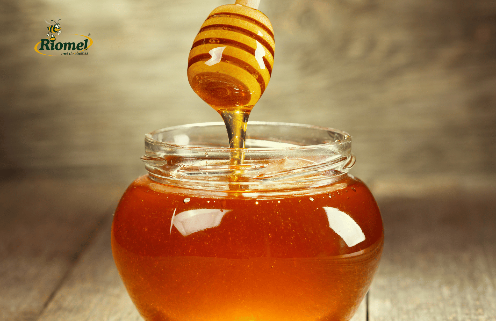

Meu primeiro post
Por gustavo
Boas vindas ao meu novo hrml! Aqui vou compartilhar dicas de programação e curiosidade da área de tecnologia.
Vou compartilhar conhecimentos sobre tecnologia e programação
Por gustavo
Boas vindas ao meu novo hrml! Aqui vou compartilhar dicas de programação e curiosidade da área de tecnologia.

Por gustavo
Nas Olimpíadas do Rio de Janeiro em 2016, Neymar cravou o seu nome na história dos Jogos Olímpicos ao marcar um gol contra Honduras com apenas 14 segundos de jogo!
Fonte: Globo Esporte (GE)

Por gustavo
O mel é o único alimento do mundo que nunca estraga se for armazenado corretamente. Arqueólogos já encontraram potes de mel em tumbas do Egito Antigo com mais de 3.000 anos que ainda estavam perfeitamente comestíveis!
Fonte: Mundo Educação (UOL)